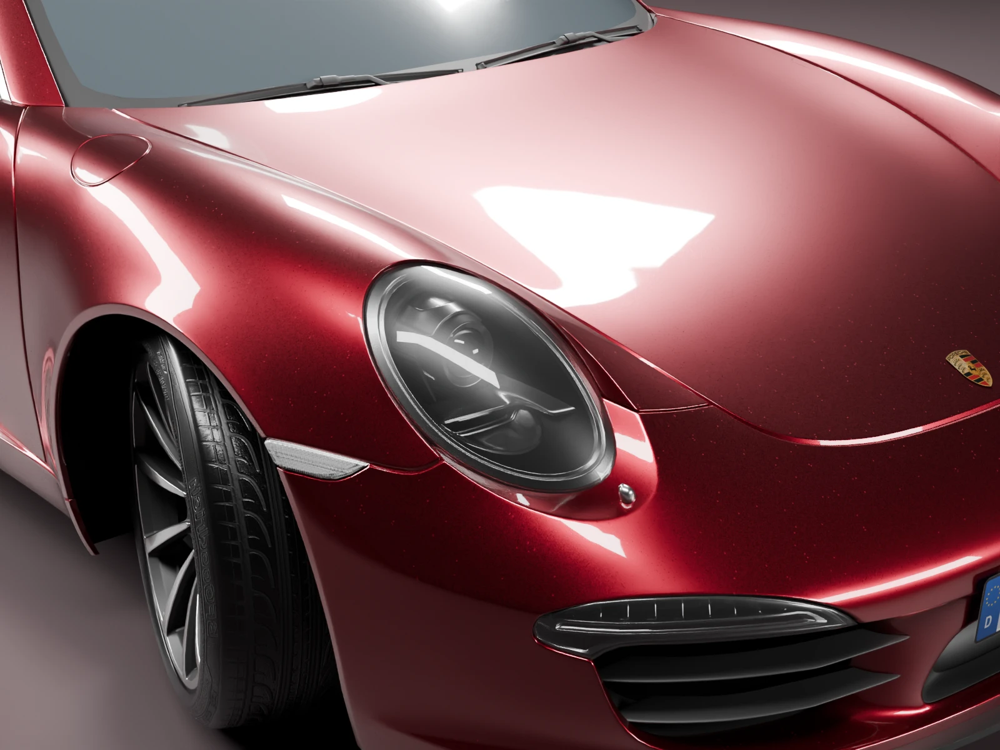
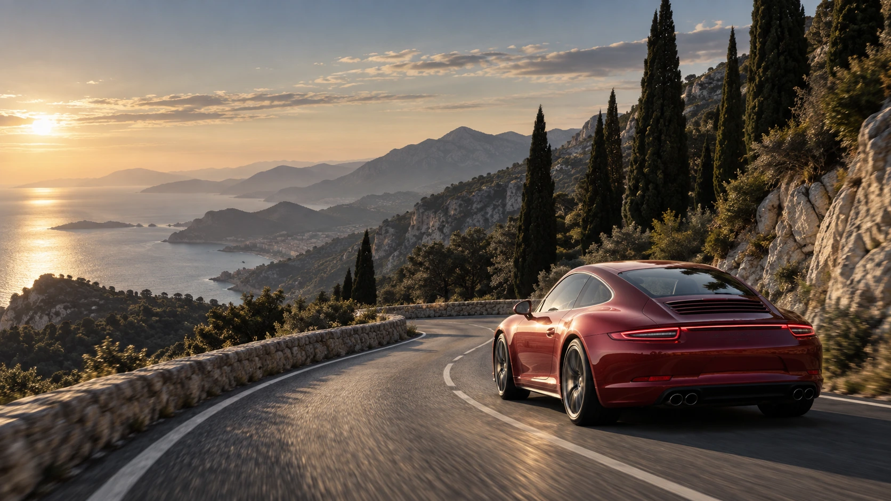

FOR THE LOVE OF THE DRIVE.
An icon.
For life.
The Porsche 911. Reimagined in claret.
For the roads you take just because.
A familiar silhouette.
An enduring obsession.
Look closer.
Stay a little longer.
BRINGING AN ICON TO LIFE
Preparing the 911…
Scroll for a closer look
THE DETAILS
You know it
when you feel it.
A curve. A reflection. The way everything comes together.
Some things are worth looking at a little longer.

The round headlamp. The rising wing. A silhouette with a language all its own.
OUR APPROACH
Care, in every detail.
PAINT / SURFACES / DETAIL
Preserve what makes it unmistakable. Bring depth back to the paint, clarity to the lights, and care to every surface.
Every car has a different story. The right starting point is yours.

FOR THE LOVE OF THE DRIVE.
Take the
long way.
No hurry. No occasion.
Just a good car and somewhere to go.